Proyectos publicados
Redes Sociales
Twitter (Gestionado por Ricardo Meyer):
 @refugiobizarro
@refugiobizarro
Instagram y Threads (Gestionados por Yuke Kabula):
 refugio.bizarro
refugio.bizarro
 @refugio.bizarro
@refugio.bizarro


Colectivo weird con enfoque en Los Mitos de Cthulhu, el rol y la fantasía oscura, hogar de la eZine homónima. Coordinada por la Wiki Lovecraft.
Twitter (Gestionado por Ricardo Meyer):
Instagram y Threads (Gestionados por Yuke Kabula):